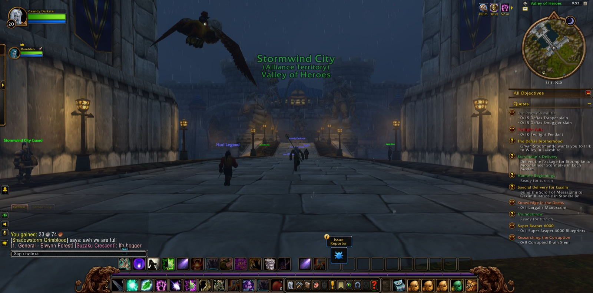
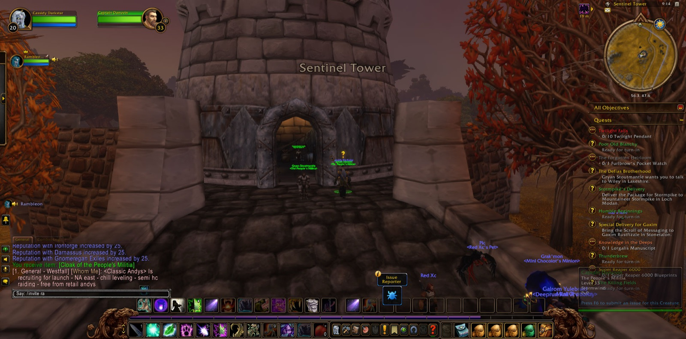
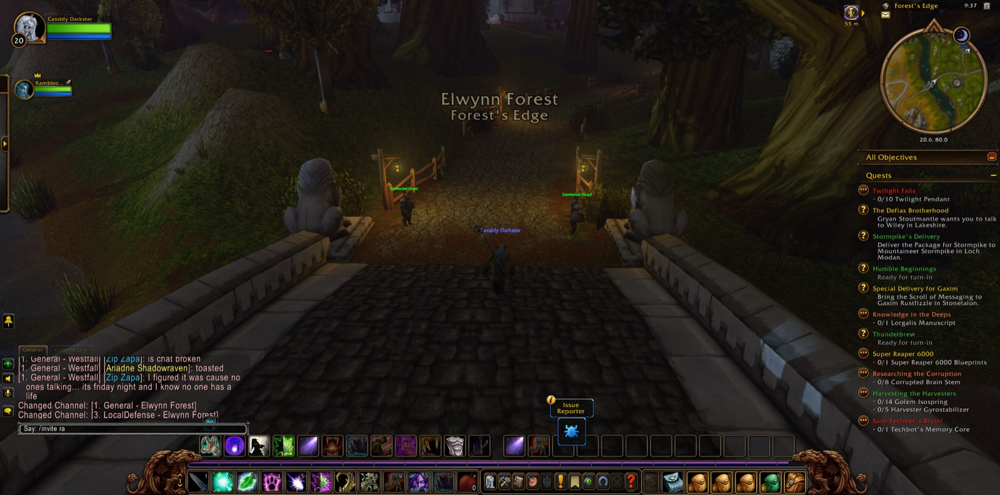

Cassidy Darkstar set out from Lake Elune'ara in Moonglade, and there Rambleon the hunter joined him. The two passed together through Darnassus and down to Rut'theran Village, and over The Veiled Sea to Auberdine on the shore of Darkshore, and from there across the water again to Stormwind Harbor. In the Mage Quarter of Stormwind Cassidy laid down the errand called Devils in Westfall and took up another, to bear the Scroll of Messaging to Gaxim Rustfizzle in Stonetalon. Then the road led south through Goldshire and Forest's Edge into Westfall, where he gathered a handful of oats for Poor Old Blanchy, felled his first Harvest Watcher at Alexston Farmstead, and took up the errands of Thunderbrew and Collecting Memories among The Dagger Hills.


Beneath Moonbrook lay the Deadmines, and into them Cassidy went with a fellowship gathered at the door. Dire the warrior came with them and stayed long. Jstermy the hunter and Emchetyre the mage joined soon after and walked with them through the deep ways, and Cortonna the mage stood with them only for a moment before turning aside. In the dark the company overcame Marisa du'Paige and Rhahk'Zor. In the Mast Room they threw down Sneed and Sneed's Shredder, and so the task laid upon them for Gnoam Sprecklesprocket was done. In the Goblin Foundry Gilnid fell, and at last they came into Ironclad Cove. The way was hard, and more than once Cassidy walked back from Sentinel Hill to rejoin his friends, yet the miners, diggers, craftsmen and pirates of the Defias fell before them in great number. Many pictures were taken in those halls.


When the fellowship broke, Rambleon remained. He and Cassidy went to The Dead Acre, where Harvest Reapers and a Greater Fleshripper were slain. Raven the warlock walked beside Cassidy for a good stretch among the Riverpaw gnolls about Stendel's Pond, until the gnoll paws for Patrolling Westfall were gathered. Then came the bandanas of the Defias in Demont's Place and The Dagger Hills, okra and hops, twenty Harvest Watchers for The Killing Fields, and a simple compass for Humble Beginnings. One by one these were brought home: to Sentinel Hill, to Saldean's Farm, and to The Jansen Stead, where Poor Old Blanchy had his oats at last. There too Furlbrow's Pocket Watch, the forgotten heirloom, was returned. In Fargodeep Mine he gathered gold dust and gave it up in Goldshire.


In Cathedral Square in Stormwind, Cassidy came into new strength, reaching his twenty-first level, and the errand of Humble Beginnings was completed. In the Dwarven District he set aside Underground Assault and took up Oh Brother.... In the Royal Library he finished Speaking of Fortitude and was sent toward Brother Paxton. There Rambleon, his fellow for nearly the whole road, parted from him. Cassidy went home alone through Darnassus and the Cenarion Enclave, and on over Darkshore into Ashenvale, by Astranaar and The Shrine of Aessina to Maestra's Post, where he took up the errand of Bathran's Hair. On The Zoram Strand Rockin the shaman met him briefly at the gate of Blackfathom Deeps, and a single Fallenroot Satyr fell within. There Cassidy halted with the deeps still open before him, and the road went on beyond.

